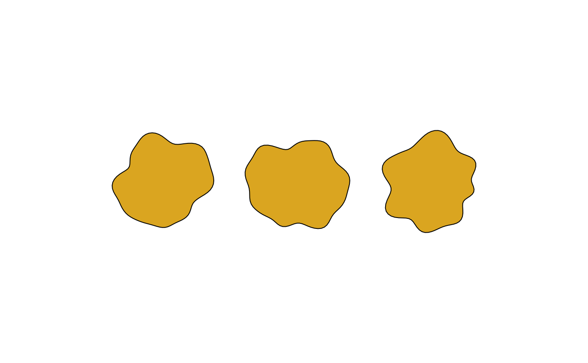

shape_combine() merges the computed points of several
polygon-geometry drawables into a single shape_raw, one sub-path per
input (see xy's own id). This is the ergonomic entry point for the
two motivating multi-sub-path use cases – a shape with a hole (one
input nested inside another, under style()'s default rule = "evenodd"), or several disjoint shapes sharing one style – without
computing id by hand the way shape_raw()'s own id argument
requires.
Arguments
- ...
Two or more polygon-geometry drawable objects (
@geometry == "polygon", e.g.shape_circle(),shape_blob()).- style
A style object for the combined shape, or
NULL(the default) to reuse the first input's ownstyle. Every input's own style besides the one that's kept is discarded – adrawablehas exactly onestyle; several independently-styled shapes should use a sketch instead.
Value
A shape_raw.
Details
Each input's own already-computed points (i.e. trans/noise-based
distortion already applied, the same way convert() "bakes in" a
drawable's transform) becomes one or more sub-paths in the combined
output – an input that already has multiple sub-paths of its own
(e.g. the output of an earlier shape_combine() call) keeps them all,
renumbered to stay distinct from every other input's own sub-paths.
Whether nested sub-paths render as a hole or a second solid region is
purely a function of their geometric nesting and style@rule (see
style()'s own docs) – not of argument order, and not of anything
shape_combine() itself decides.
Examples
# a ring with a hole: a smaller circle nested inside a larger one
draw(shape_combine(
shape_circle(radius = 2),
shape_circle(radius = 1),
style = style(fill = "steelblue")
))
# several disjoint blobs sharing one style
draw(shape_combine(
shape_blob(x = 0, distortion = noise_field(seed = 1L)),
shape_blob(x = 3, distortion = noise_field(seed = 2L)),
shape_blob(x = 6, distortion = noise_field(seed = 3L)),
style = style(fill = "goldenrod")
))

# combining a hole with a disjoint extra shape in one call
draw(shape_combine(
shape_circle(x = 0, radius = 2),
shape_circle(x = 0, radius = 1),
shape_circle(x = 4, radius = 0.5)
))